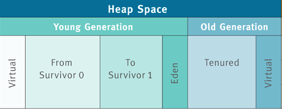

JVM-3 Java 虚拟机内存结构
运行时数据区
在 《Java 虚拟机规范》中用的是「运行时数据区」这个术语。但很多时候并不是很形象。 再加上日积月累的习惯，都习惯用虚拟机内存结构这个说法。 根据 《Java 虚拟机规范》中的说法，Java 虚拟机的内存结构可以分为公有和私有两个部分。 公有是指所有线程都共享的部分，指的是 Java 堆、方法区、常量池。 私有指的是每个线程的私有数据，包括：PC 寄存器， Java 虚拟机栈、本地方法栈。
公有部分： Java 堆、方法区、常量池
在 Java 虚拟机中，线程共享的部分包括 Java 堆、方法区及常量池。
Java 堆指的是从 JVM 划分出来的一块区域，这块区域专门用于 Java 实例对象的内存分配， 几乎所有实例对象都会在这里进行内存的分配。之所以说几乎是因为有特殊情况，有些时候 小对象会直接在栈上进行分配，这种现象称之为「栈上分配」。
方法区指的是储存 Java 类字节码数据的一块区域，它存储了每一个类的结构信息， 例如运行时常量池、字段和方法数据、构造方法等。可以看到常量池是存放在方法区中的， 但在 《Java 虚拟机规范》将常量池和方法区放在同一个等级上。
方法区在不同版本的虚拟机有不同的表现形式，在 1.7 版本的 HotSpot 虚拟机中，方法区 被称为永久代（Permanent Space），而在 JDK1.8 中则被称为 MetaSpace。
Java 堆
Java 堆根据对象存活时间的不同，Java 堆还被分为年轻代、老年代两个区域，年轻代还被 进一步划分为 Eden 区，From Survivor 0、To Survivor 1 区。 见图。

当有对象需要分配时，一个对象永远优先被分配在年轻代的 Eden 区，等到 Eden 区域内存
不够时，Java 虚拟机会启动垃圾回收。此时 Eden 区没有被引用的对象的内存会被回收，
而一些存活较长时间的对象则会进入到老年代。在 JVM 中有一个名为 -XX:MaxTenuringThreshold
的参数专门用来设置晋升到老年代所需要经历的 GC 次数，即在年轻代的对象经过了指定次数的 GC 后，
将在下次 GC 时进入老年代。
这里让我们思考一个问题：为什么 Java 堆要进行这样一个区域划分呢？
根据我们的经验，虚拟机中的对象必然有存活时间长的对象，也有存活时间短的对象， 这是一个普遍存在的正态分布规律。 如果我们将其混在一起，那么因为存活时间短的对象有很多，那么势必导致较为频繁的垃圾回收。 而垃圾回收时不得不对所有内存都进行扫描，但其实有一部分对象，它们存活时间很长， 对他们进行扫描完全是浪费时间。因此为了提高垃圾回收效率，分区就理所当然了。
另外一个值得我们思考的问题是：为什么默认的虚拟机配置，Eden：from ：to = 8:1:1 呢？
其实这是 IBM 公司根据大量统计得出的结果。根据 IBM 公司对对象存活时间的统计， 他们发现 80% 的对象存活时间都很短。于是他们将 Eden 区设置为年轻代的 80%， 这样可以减少内存空间的浪费，提高内存空间利用率。
私有部分： PC 寄存器、Java 虚拟机栈、本地方法栈
Java 堆以及方法区的数据是共享的，但是有一些部分则是线程私有的。线程私有部分可以分为： PC 寄存器、Java 虚拟机栈、本地方法栈三大部分。
PC 寄存器，顾名思义 Program Counter 寄存器，指的是保存线程当前正在执行的方法。
如果这个方法不是 native 方法，那么 PC 寄存器就保存 Java 虚拟机正在执行的字节码指令地址。
如果是 native 方法，那么 PC 寄存器保存的值是 undefined。
任意时刻，一条 Java 虚拟机线程只会执行一个方法的代码，而这个被线程执行的方法称为该线程的当前方法，
其地址被存在 PC 寄存器中。
Java 虚拟机栈，这个栈与线程同时创建，用来存储栈帧，即存储局部变量与一些过程结果的地方。 栈帧存储的数据包括：局部变量表、操作数栈。
当 Java 虚拟机使用其他语言（例如 C 语言）来实现指令集解释器时，也会使用到本地方法栈。 如果 Java 虚拟机不支持 natvie 方法，并且自己也不依赖传统栈的话，可以无需支持本地方法栈。